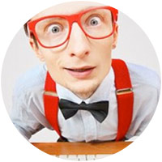
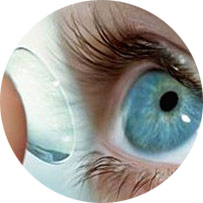
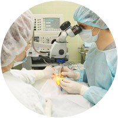
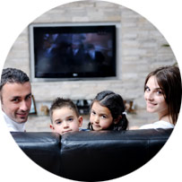

«Глаз – тот орган чувств, который приносит нам
Более всего удовлетворения,
Ибо позволяет постичь суть природы».
Более всего удовлетворения,
Ибо позволяет постичь суть природы».
Аристотель
Введение
Иметь 100-процентное зрение, видеть мир во всех его красках, радоваться жизни в полной мере – мечтает каждый!
Но, к сожалению, похвастаться идеальным зрением могут далеко не все.
Все больше и больше людей имеет проблемы со зрением. Глаукома, катаракта, слепота… Люди все чаще обращаются к офтальмологам с различными заболеваниями глаз, многие из которых неизлечимы или тяжело поддаются лечению. Вот некоторые из них:
По данным Всемирной организации здравоохранения (ВОЗ), во всем мире насчитывается около 37 миллионов слепых людей и 124 миллиона человек с плохим зрением. Каждые 5 минут в мире один взрослый человек теряет зрение, каждый час – ребенок. При этом в трех из четырех случаев слепота излечима или предотвратима. По расчетам ВОЗ, если вовремя не будут приняты срочные меры, к 2020 году число слепых в мире удвоится и достигнет 75 миллионов. Медики бьют тревогу: если раньше возрастным порогом катаракты считали 60-летний возраст, то сейчас он снизился до 40 лет.
Вернуть зрение – для многих поистине мечта! Но наука здесь не стоит на месте. Есть различные варианты восстановления зрения, но многие из них, как бы страшно это ни звучало, постепенно УБИВАЮТ НАШЕ ЗРЕНИЕ… Это нельзя назвать лечением. Очки и линзы являются лишь заменителями идеального зрения!
Средний показатель после 2 недель упражнений *
* — По статистике опросов покупателей.

Очки
Очки закрывают доступ вредному для глаз ультрафиолету, который на 80 % поступает в наш организм через органы зрения. Однако учеными доказано, что при нехватке ультрафиолета в организме развиваются различные заболевания внутренних органов.
Очки нарушают естественное функционирование глаз. Уже после нескольких недель их использования глазные мышцы теряют способность к полноценной самостоятельной работе. Что в конечном итоге ведет к атрофии глазодвигательных мышц и ухудшению состояния всей зрительной системы.

Линзы
Несмотря на стремительную популярность, линзы крайне опасны для здоровья. По самой своей сущности контактные линзы соприкасаются с глазами и могут вызвать их раздражение или даже повреждение. Их постоянное использование может превратить человека даже в инвалида.
Риски есть, и Вы должны о них знать:
- Микробный кератит
- Недостаток кислорода (гипоксия)
- Язва роговицы
- Конъюнктивит

Лазерная коррекция
Как и у любой операции, у лазерной коррекции есть свои недостатки, причем такое количество, что ее изобретатели уже не советуют ее для массового применения. И здесь тоже есть свои риски:
- Повтор операции. Нет никакой гарантии, что операция пройдет успешно и вы получите ожидаемый эффект. В данном случае просто необходима повторная операция.
- Остается необходимость в очках или контактных линзах. Не все пациенты после такой операции станут смотреть на мир свободными глазами. Бывают случаи, когда людям после операции необходимо продолжать носить очки или контактные линзы.
- Результаты операции непостоянны. Через пару лет Ваше зрение может снова упасть и стать таким же, каким было до операции.
- Визуальные абберации. Это неприятные визуальные эффекты, которые могут возникнуть после операции: разница преломления между глазами, разница в размере изображения, туманное зрение, двоение в глазах, а также колебание зрения в течение дня.
- Сухость глаз. У многих после операции возникает проблема сухости глаз. В дальнейшем возможно ухудшение состояния, которое приводит к покраснению, жжению, а также снижению зрения после операции. В большинстве случаев это не проходит, поэтому приходится постоянно использовать глазные капли.
- Потеря зрения. Это одна из самых больших опасностей в лазерной хирургии. Заключается она в том, что зрение пациента может снизиться настолько, что никакие линзы и очки уже не помогут. Это может произойти, если лазер поранит глаз, произойдет сбой в оборудовании, будет занесена какая-либо инфекция или форма роговицы будет изменена слишком сильно.
Вывод, который напрашивается сам по себе…
- Прибегая к помощи очков и линз, мы беспощадно губим собственное зрение, не оставляя себе права на его восстановление.
- Использование контактных линз приводит к возникновению различных заболеваний глаз, многие из которых неизлечимы.
- Операция по восстановлению зрения не дает никаких гарантий на успех.
- Последствия такой операции могут быть более опасны, чем ваш диагноз.
- Лазерная коррекция дает лишь временное «выздоровление». Со временем заболевания вновь возвращаются, что приводит к резкому ухудшению зрения.
Но как же быть? Люди хотят видеть, люди хотят мечтать!
И здесь идеальным вариантом восстановления зрения должен быть:
- Безопасный;
- Безоперационный;
- Исключающий ношение очков и линз;
- Апробированный и проверенный.
МЕТОД ЕСТЕСТВЕННОГО ВОССТАНОВЛЕНИЯ ЗРЕНИЯ!
Вашему вниманию
Революционная разработка 2012–«Эффективное восстановление зрения»!
Безоперационное восстановление зрения за 10 дней!
- Вы можете восстановить зрение за 10 дней!
- Вы больше не будете щуриться и приглядываться!
- Вы будете видеть мир во всех его красках!
- Вы будете полноценно наслаждаться красотой окружающего мира!
Занимаясь всего 10-15 минут в день, Вы вернете себе 100-процентное зрение! И навсегда снимете очки или контактные линзы: в основе метода лежит уникальный курс. С ним Вы быстро и без усилий вернете зрение естественным путем, развивая мышцы и восстанавливая природную гибкость хрусталика, от которой, в свою очередь,и зависит состояние вашего зрения.
Как это работает?..
Право на зрение имеет каждый!
Есть одна мудрая фраза: «Мы все рождаемся с одинаковыми возможностями». И это непреложная истина! И истину эту можно применить ко всем сторонам жизни человека: будь то финансы, карьера, любовь, здоровье… Именно – ЗДОРОВЬЕ!!! Вы скажете, как же так: ведь у меня плохое зрение, а у соседа хронический гайморит? – какие это равные возможности?! И Вы отчасти правы, но давайте вспомним, что на всякий яд найдется противоядие, на всякий вопрос – ответ, и от каждой болезни есть лекарство! Я, как врач, могу с уверенностью заявить, что природой предусмотрен естественный способ восстановления зрения, а также излечения от любой болезни! Сейчас эти методы активно изучаются европейскими учеными, разрабатываются методики, которые предназначены для широких масс. Таким образом, человек просто использует возможности, заложенные в него природой!
В основе метода лежит принцип восстановления зрения с помощью простых упражнений на фокусирование зрения. Природа подарила человеку удивительную оптическую систему. Все, что требуется от нас, – содержать ее в порядке, заботиться, развивать, и тем самым сохранить на всю жизнь!
Стоит уделять занятиям лишь 10-15 минут в день, чтобы начать восстанавливать зрение.
Что из себя представляет данный курс?
Комплекс материалов для коррекции зрения:
- Пошаговое руководство по овладению курсом.
- Упражнения для развития глазных мышц.
Каким образом происходит процесс естественного восстановления зрения?
- Ваши глазодвигательные мышцы напрягаются и расслабляются.
- Хрусталик глаза меняет свою форму, что позволяет видеть лучше.
- Мышцы развиваются – Вы начинаете видеть лучше.
- Постепенно хрусталик становится более гибким и подвижным, что позволяет легко концентрировать взгляд на близких и отдаленных объектах.
- Повышается мышечный тонус!
- Ваши глазодвигательные мышцы наполняются здоровьем!
- Вы приобретаете 100%-е зрение!
Вы приобретаете...
Без операций– здоровое зрение естественным путем!
Вы возвращаете собственное зрение абсолютно безопасным для здоровья способом!
Никаких операций и губительных заменителей (очки и линзы)! Никакого риска! Побочных эффектов и непредсказуемых последствий!
Никакого послеоперационного периода!
Вы восстанавливаете баланс, заложенный природой, и приобретаете 100%-е зрение!
Вы восстанавливаете зрение без отрыва от работы!
Легко и с удовольствием!
Вы можете взять диск с методикой с собой на работу, можете заниматься дома, в кафе – где угодно!
10-15 минут упражнений перед работой не только помогут вам восстановить мышцы и вернуть зрение, но и защитить Ваши глаза от вредного компьютерного излучения на весь день!
Никаких утомительных тренировок! Вы отдыхаете и тем самым возвращаете собственное зрение!
Все, что от вас нужно – 10-15 минут упражнений, описанных на диске.
Вы не напрягаетесь, ничего не делаете, просто выполняете упражнения, данные на диске! Благодаря этому методу Вы даете отдых своим глазам, снимаете усталость от очков, общения с компьютером, просмотра телевизора и т.д.

Восстанавливайте зрение всей семьей! С пользой!
Восстанавливайте зрение всей семьей! С пользой!
И удовольствием!
Вы можете заниматься по курсу всей семьей. Вы смотрите телевизор и вместо назойливой рекламы Вы устраиваете себе приятную 10-минутную паузу для глаз!
Глаза отдыхают, зрение восстанавливается, а мозг не засоряется ненужной информацией… Кроме того, этот метод помогает всему организму расслабиться и восстановиться, а также обеспечивает хороший сон.
Вы экономите время и деньги! И выгодно инвестируете в собственное будущее!
Вы тратите на занятия 10-15 минут в день без отрыва от домашних дел или работы! Только представьте, как много времени Вы сэкономите на малоприятных визитах к врачам, подборе линз, очков и т.д.
А сколько это сэкономит Ваших денег! Вы больше не будете покупать дорогие очки, оправы, линзы, капли. Ваша семья избавится от целой статьи расходов! Вы больше не будете тратить деньги на бесполезные заменители, которые медленно убивают Ваше зрение! Вы возвращаете свое время и деньги!
100% зрение в 100% случаев! Независимо от диагноза и длительности болезни!
Вы гарантировано вернете зрение – методика подходит абсолютно всем! Нет никаких ограничений!
Независимо от остроты Вашего зрения и длительности заболевания.
Вы корректируете свое зрение в сторону здорового показателя. И приобретаете 100% зрение в 100% случаев!
*При соблюдении всех рекомендаций в методике
«Эффективное восстановление зрения» — самый быстрый способ улучшить зрение!
Вы почувствуете улучшение уже на пятый день занятий! Через 14 дней ежедневного просмотра курса всего по 10 минут Вы улучшите свое зрение на 25% и более! Раз и навсегда! Ни один метод не дает таких быстрых результатов!
За счет использования методики «Эффективное восстановление зрения» Вы вернете зрение в рекордные сроки!
Ваше зрение |
Срок восстановления |
|||||
|---|---|---|---|---|---|---|
| 7 дней | 14 дней | 21 день | 30 дней | 45 дней | 60 дней | |
| +/- 5.0 | +/- 4,2 | +/- 3,6 | +/- 3,0 | +/- 2,5 | +/- 1,5 | Полное восстановление |
| +/- 4.0 | +/- 3,6 | +/- 3,0 | +/- 2,3 | +/- 1,7 | Полное восстановление | |
| +/- 3.0 | +/- 2,2 | +/- 1,6 | +/- 1,2 | Полное восстановление | ||
| +/- 2.0 | +/- 1,5 | +/- 1,2 | Полное восстановление | |||
| +/- 1,5 | +/- 1,2 | Полное восстановление | ||||
Ответы на Ваши вопросы
Не опасна ли методика для ребенка? Если он случайно запустит программу на компьютере?
Методика абсолютно безопасна. Подходит как взрослым, так и детям. Поэтому Вы можете смотреть курс всей семьей.
Можно ли использовать этот метод для профилактики нарушений зрения?
Разумеется. Достаточно в течение 10 минут 2-3 раза в неделю смотреть курс, и Ваше зрение будет надежно защищено от любых раздражителей.
А возможно изменение зрения? С минуса на плюс или с плюса на минус?
Такой эффект исключен! Вы восстанавливаете зрение!
Что говорят клиенты
После беременности зрение конкретно село. Очки и линзы не ношу, потому что знаю, что только хуже станет. Щурюсь постоянно – за полгода морщины возле глаз мне лет 5 прибавили. Пыталась вернуть зрение естественным путем. Кучу книг накупила и тренажеры разные. Улучшения были, но не значительные и временные. А с помощью этого метода с минус двух восстановила зрение всего за 1 неделю!
Наталья, 23 г. Новосибирск
Я счастливый обладатель 100 % зрения от природы! Но после 2-х лет постоянной работы на компьютере, зрение начало падать со страшной силой! Друг-офтальмолог посоветовал этот метод. За 10 дней вернул зрение! Чудеса! Теперь только для профилактики занимаюсь раз в неделю.
Анатолий, 32г. Екатеринбург
Зрение минус один. Очки-убийцы не ношу! Принципиально!На права решил сдать, так меня заставили их купить и в них ездить! Решил найти способ, как восстановить зрение, минус один, все-таки, не так много. С этой методом вернул зрение за неделю!
Виктор, 27 лет. Москва
Методом пользуюсь 2 недели. С минус трех дошла до минус одного! Даже не верится, что буду видеть теперь 100%! Купила очки обычные для нормального зрения. За 5 лет так к ним привыкла! Часть моего стиля, мне кажется, что с ними я выгляжу солиднее.
Светлана, 38 лет. Самара
Заключение
Если Вы действительно хотите вернуть здоровое зрение, а с ним и здоровье всего организма – пора действовать! Восстановить зрение естественным путем – это не роскошь и не фантастика! Это Ваш выбор. Выбор образованного человека!
Подводя итог, давайте еще раз вспомним, что это за методика и что она Вам дает:
За 30 дней использования программы
Вы гарантированно приобретаете 100%-е зрение
Вы гарантированно приобретаете 100%-е зрение
А с ним в Вашу жизнь придут:
- ЗДОРОВЬЕ – никакого дискомфорта, слезоточивости и боли в глазах!
- УДОВОЛЬСТВИЕ – Вы, наконец, увидите мир во всем его многообразии и красоте!
- КРАСОТА – Вы выглядите по-новому: красивее, моложе! Избавившись от очков, Вы прощаетесь с комплексами, которые мучили Вас годами! Вы приобретаете уверенность в себе! Никаких морщин вокруг глаз! Ведь отныне ваши глаза спокойны – исчезло напряжение!
- АКТИВНЫЙ ОТДЫХ – Вы занимаетесь любыми видами спорта и активного отдыха! Без ограничений! Без риска разбить очки и повредить глаза.
- ВРЕМЯ – Вы приобретаете огромное количество свободного времени. Очереди в поликлиниках и утомительные приемы врачей, подбор линз, нужной Вам оправы – все это в прошлом! Теперь это Ваше время для отдыха, встреч с друзьями и созерцания окружающей Вас красоты!
- АВТО – Вы спокойно водите автомобиль! Без ограничений! Без очков! Медкомиссия для Вас – это формальность. Вы видите 100%, а значит, чувствуете себя за рулем спокойно и уверенно!
- ДЕНЬГИ – Вы ощутимо экономите на очках, линзах и дорогостоящих операциях. Вы выгодно инвестируете в собственное будущее! Представьте, как быстро вернуться к Вам эти деньги, когда вы перестанете покупать очки, футляры, линзы, различные капли и т. д.
Перед Вами сейчас встает вполне резонный вопрос:
Почему я впервые слышу о подобном лечении?
Почему я ничего о нем не знаю?
Почему я ничего о нем не знаю?
На это есть три очень веские причины:
причина 1.
Денежная. Ежегодная чистая прибыль от продажи очков, контактных линз и операций на глаза в мире превышает десятки, а то и сотни миллиардов долларов. Какая взаимосвязь? Внимание, ответ!
Закон экономики таков: потребитель не должен исчезнуть!
причина 2.
Закостенелость нашей медицины. Более ста лет известна теория, по которой людям восстанавливают зрение естественным путем. А во всех медицинских институтах студенты изучают только теорию, по которой при ухудшении зрения надо прописывать очки.
причина 3.
Для того чтобы человеку восстановить зрение, ему надо над собой поработать. А для многих, как выясняется, это просто неприемлемо. Оказывается, проще сходить к врачу и подобрать себе новые очки, лишь бы самому при этом ничего не делать.
Эффективность методики доказана
тысячами практикующих!
тысячами практикующих!
Все обещают – мы делаем и даем гарантию качества активной жизни.
Здоровье + красота = твой выбор
Здоровье + красота = твой выбор
Для заказа программы «Эффективное восстановление зрения» + инструкция нажмите на кнопку внизу: